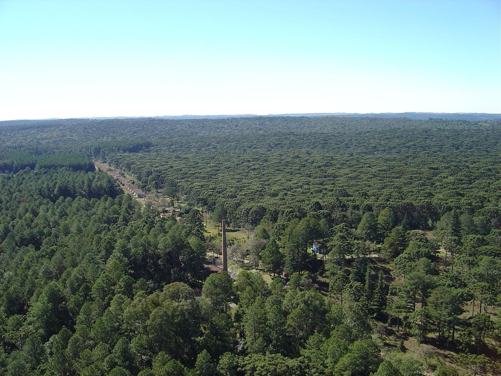

População Estimada 2019: 60.727 habitantes
Fonte: IBGE, 2020. População Urbana Estimada– 44.932 População Rural Estimada – 11.275
Fonte: IBGE, 2010
Altitude (metros): 836
Latitude 25 º 28 ' 02 '' S
Longitude 50 º 39 ' 04 '' W
Fonte: IBGE, 2020
O ecossistema que compõe a região de Irati é a Floresta Ombrófila Mista, ou seja, que necessita nas fases iniciais de crescimento, de umidade e sombra. A composição vegetal do município divide-se nos estágios: inicial (capoeira, vassourinha, etc.); médio (capoeirão, florestas em formação); avançado (reflorestamento; agricultura, pastagem e outros, florestas formadas).
As principais espécies nativas são: Araucária; Imbuia; Erva-mate; Bracatinga; Cedro. Recente estudo apresentado no Centenário de Irati por Daniel Saueressig, pesquisador da área de Dendrologia, apontou a presença de 174 especies arbóreas autóctonas em Irati. As famílias Myrtaceae (30 espécies), Fabaceae (17), Lauraceae (15), Euphorbiaceae (10), Solanaceae (9), Asteraceae e Salicaceae (8), Aquifoliaceae e Sapindaceae (5) e Meliaceae (4), apresentaram uma maior riqueza florística e juntas representam 63,79% das espécies registradas. Segundo o mesmo autor, as espécies Calyptranthes grandifolia, Neomitranthes 17 | P á g i n a gemballae e Tetrorchidium rubrivenium apresentam baixa frequência e podem ser consideradas espécies raras na área do município.
Quanto a fauna da Floresta Ombrófila Mista, podem ser encontrados roedores (ratos, cutias e pacas), aves ameaçadas de extinção como a gralha-azul e o papagaio- de-peito[1]roxo, além de inúmeros insetos. A semente da araucária, o pinhão, é muito apreciada pela fauna em geral e se constitui numa fonte de alimento essencial para o seu sustento.
